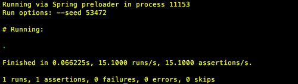
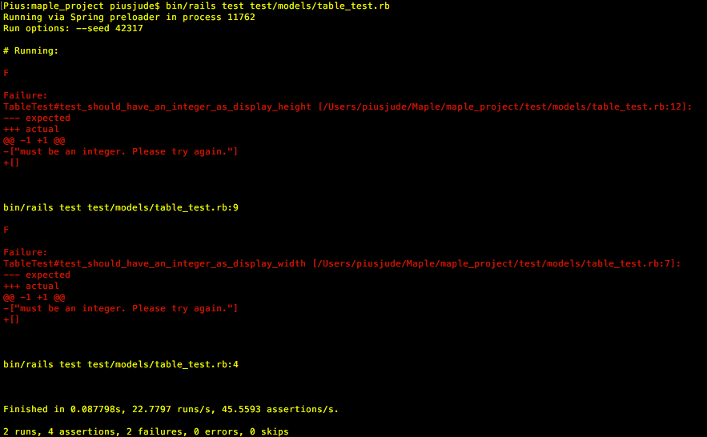

Testing
We know it is vital to test our project in order to make sure it does what it is intended to do. In order to achieve this, we undertook a number of different approaches. We carried out Unit Testing and Integration on our application in order to confirm that our data models perform as we expect them to. We also wanted to get some general user feedback and so we created a set of test cases and carried out some User Acceptance Testing in order to get an idea of things such as user experience and ease of use.
Finally, during development we thought it was important to test each development iteration of our application in order to make sure our client was always happy. We therefore demonstrated each iteration to him in person and collected his feedback before moving on to the next development iteration. Each set of feedback, along with the details of each iteration can be seen here:
Iteration 1 Feedback
Iteration 2 Feedback
Iteration 3 Feedback
Iteration 4 Feedback
Final Client Feedback
Our User Acceptance Testing , Unit Testing and Integration Testing for our final application can be seen below:
User Acceptence Testing
| Test Case | Feedback |
|---|---|
| User should easily be able to create a new system | 1) User interface easy to understand and navigation is simple 2) I found it very easy to add a new system |
| User should be able to view all systems | 1) The navbar made it very easy to navigate to the section where I could view all systems 2) I especially liked the search feature, it saved time rather than searching all of the systems manually |
| Systems should be able to be edited (name and active status) | 1) The pencil icon was clear as it is universally used on many applications 2) I liked the hover over text that said what the icon did as it confirmed my thoughts, adding an extra layer to the user experience |
| User should be able to create a new version | 1) The create versions link in the navbar was very clear to me along with the dropdown to choose a system 2) There were multiple routes in order to get to the create versions page, and at first I struggled to realise that they led to the same page |
| User should be able to view all versions | 1) The view versions link on the home page was particularly clear 2) The fact that all system names were a link within the Systems list made it very clear that that took me to more information regarding the versions |
| User should easily be able to add, edit and delete data points | 1) The hover text on the name of versions in the version list stated "click to view data points" so it wasn't very clear that this was also the link to add new data points 2) The button to add new data points was very clear |
| User should be able to create a mapping between two versions | 1)The shortcut on the homepage made navigation to the mapping page. Once there the instructions were clear on how to map between versions. 2) Having to be redirected to a new page to choose the version for each system to map was an extra click that I felt could have been avoided |
| User should be able to view and delete mappings | 1) The view all mappings page was clear with the bin icon clearly being the delete feature 2) At first I didn't see the bin icon for deletion as you had to scroll to the end of the table |
| System names must be unique | 1) I was not allowed to enter two identical system names 2) The error message was clear and let me know to choose a new, unique name |
| Version names must be unique | 1) The validation worked for me 2) I tried to enter a version name that was already used an I was not allowed |
| A set of data points cannot be added unless a logical name is given | 1) I left the logical name blank and I was not allowed to submit the data points 2) It was not clear to me that the logical name was manditory before submission |
| A duplicate mapping cannot be made | 1) I was not allowed to make a duplicate mapping 2) It would be good to not allow a selection of data points that have already been mapped to by disabling the radio buttons |
Unit Testing
In order to test our data models, we first wrote tests which fail to provide the desired functionality before writing tests which pass. This approach is a form of Test-Driven Development (TDD). We used minitests which are a form of unit testing that can be completed on data models in rails. We will complete minitests on the System, Versions, Data Points and Mappings models of our application.
1 Testing System Model
Terminal command used to run all the tests on system model:
bin/rails test test/models/system_test.rb
1.1 Testing presence of system name when saving a system
This test was implemented without any validations in place for the system model. We aim to ensure that no system is saved without a system name being provided and so used the following test script:
require 'test_helper' class SystemTest < ActiveSupport::TestCase test "should not save system without system_name" do system = System.new assert_not system.save , "Saved the system without a system_name" end
Result: Test failed as expected when no validations are implemented on the system model. F denotes a failure. The corresponding trace is shown under Failure along with the name of the failing test (“should not save system without system name”). The message “saved the system without a system name” is the assertion failure message.
Now we implement validations on the system name and our test passes without failure.
validates_presence_of :System_Name, :message => "must be provided. Please try again. "
1.2 Testing uniqueness of system name when saving a system
This test is first implemented without validations. It tests to ensure that a system does not save if the system name provided is not unique. In the test we create a system with a name called “Example System” and then test to see if it saves a duplicate system.
def setup @system = System.create(System_Name: "Example system") end test "System name should be unique" do duplicate_system = @system.dup assert_not duplicate_system.valid? , "Saved the system without a unique system name" end
Result: The test fails without validations as expected:
Now we implement the validation to ensure system names are unique: The test now passes without failure.
validates_uniqueness_of :System_Name, :message => "already exists. Please choose a new name. (System names are not case sensitive).",:case_sensitive => false "
2 Testing Versions Model
Terminal command used to run all the tests on version model:
bin/rails test test/models/version_test.rb
2.1 Testing presence of version name when saving a version
This test was implemented without any validations in place for the version model. We aim to ensure that no version is saved without a version name being provided:
test "should not save version without version name" do
version = Version.new
assert_not version.save, "Saved the version without a version name"
end
Result: Results: The test fails as expected when no validations are provided.
Now we implemented the validation to ensure versions are always saved with a version name provided: The test now passes without failure.
belongs_to :system has_many :table, dependent: :destroy validates_presence_of :Version_Name

2.2 Testing uniqueness of version name when saving a version
This test is first implemented without validations. It tests to ensure that a version does not save if the version name provided is not unique. In the test we create a version with a name called “Example Version” and then test to see if it saves a duplicate system. The code implementing test for uniqueness was:
def setup @version = Version.create(Version_Name: "Example Version") end test "Version name should be unique" do duplicate_version = @version.dup assert_not duplicate_version.valid? , "Saved the version without a unique version name"
Result: The test fails as expected when no validations are provided
Now we implemented the validation to ensure versions are only saved if a unique version name is provided: The test now passes without failure.
validates_uniqueness_of :Version_Name, :scope => :system_id, :message => "already exists. Please choose a new version name. (Version names are not case sensitive).",:case_sensitive => false
3 Testing Data Points (tables) Model
Terminal command used to run all the tests on tables model:
bin/rails test test/models/table_test.rb
3.1 Testing presence of logical name when saving a data point
This test was implemented without any validations in place for the data point model. We aim to ensure that no data point is saved without a logical name being provided. The code for this test was:
test "should not save data point without logical name" do
table = Table.new
assert_not table.save, "Saved the data point without a logical name"
Result: Results: The test fails as expected when no validations are provided.
Now we implemented the validation to ensure data points are only saved if a logical name is provided: The test now passes without failure.
belongs_to :version validates_presence_of :Logical_Name, :message => "must be provided. Please try again. "
3.2 Testing uniqueness of logical name when saving a data point
This test was implemented without any validations in place for the data point model. We aim to ensure that no data point is saved without a unique logical name being provided. The code implementing this test was:
def setup @table = Table.create(Logical_Name: "Example Data Point") end test "Table name should be unique" do duplicate_table = @table.dup assert_not duplicate_table.valid? , "Saved the data point without a unique logical name" end
Result: The test fails as expected when no validations are provided
Now we implemented the validation to ensure versions are only saved if a unique logical name is provided: The test now passes without failure.
validates_uniqueness_of :Logical_Name, :scope => :version_id, :message => "already exists. Please choose a new logical name for data point. (Logical names are not case sensitive).",:case_sensitive => false
3.3 Testing that display width and display height are integers if provided when saving a data point
This test was implemented without any validations in place for the data point model. We aim to ensure that no data point is saved without an integer value for display width and display height. The test implemented non-integer value examples for display width and display height and checked if a matching error message is obtained once the validation was implemented. The following code was implemented to test if display width and height are integers:
test "should have an integer as display width" do
table = Table.new(Logical_Name: 'test', Display_Width: 'test')
assert_not table.valid?, "Saved the data point without an integer Display Width"
assert_equal ["must be an integer. Please try again."], table.errors.messages[:Display_Width]
end
test "should have an integer as display height" do
table = Table.new(Logical_Name: 'test', Display_Height: 'test')
assert_not table.valid?, "Saved the data point without an integer Display Height"
assert_equal ["must be an integer. Please try again."],
Result: The test fails twice as expected when no validations are provided.

Now we implemented the validation to ensure data points are only saved if display widths and display heights are blank or integers: The tests now pass without failure and the correct error messages are obtained.
validates :Display_Width, numericality: { only_integer: true,:allow_blank => true, :message => "must be an integer. Please try again." }
validates :Display_Height, numericality: { only_integer: true, :allow_blank => true, :message => "must be an integer. Please try again." }

4 Testing Mapping Model
Terminal command used to run all the tests on mapping model:
bin/rails test test/models/map_test.rb
4.1 Testing presence of mapfrom and mapto ids when saving a mapping
This test was implemented without any validations in place for the mapping. We aim to ensure that no mapping is saved without mapfrom and mapto ids of data points being provided. The following test script was used to test for the presence of (x2):
test "should not save mapping without mapfrom id" do
map = Map.new
assert_not map.save, "Saved the mapfrom_id without a mapfrom_id"
end
test "should not save mapping without mapto id" do
map = Map.new
assert_not map.save, "Saved the mapfrom_id without a mapto_id"
end
Result: Results: The test fails as expected when no validations are provided.
Now we implemented the validation to ensure mapping are only saved if a valid map from and map to ids exits: The tests now pass without failure.
belongs_to :mapfrom, :class_name => 'Table' , optional: true
belongs_to :mapto, :class_name => 'Table' , optional: true
validate :check_mapfrom
validate :check_mapto
def check_mapfrom
if !mapfrom_id.present?
errors.add(:base, "no datapoint has been selected on the left")
end
end
def check_mapto
if !mapto_id.present?
errors.add(:base, "no datapoint has been selected on the right")
end
end
4.2 Testing uniqueness of mapfrom and mapto ids pairs when saving a mapping
This test was implemented without any validations in place for the mapping. We aim to ensure that the no repeated pair of data points ids are saved.
def setup @map = Map.create(mapfrom_id: "112", mapto_id: "113") end test "Mapping should be unique" do duplicate_map = @map.dup assert_not duplicate_map.valid? , "Saved the mapping without a unique pair of data points" end
Result: The test fails as expected when no validations are provided
Now we implemented the validations to ensure mappings are only saved if a unique pair of data points ids are provided: The tests now pass without failure.
validate :combination_mappings
validate :combination_mappings2
def combination_mappings
if Map.exists?(:mapfrom_id => mapfrom_id,:mapto_id => mapto_id)
errors.add(:base,"This mapping already exists.")
end
end
def combination_mappings2
if Map.exists?(:mapfrom_id => mapto_id,:mapto_id => mapfrom_id)
errors.add(:base,"This mapping already exists.")
end
end
4.3 Testing to ensure data points from the same version are not mapped
This test was implemented without any validations in place for the mapping model. We aim to ensure that no mapping between data points from the same version are saved. In order to complete this test we test sample data with that data points being mapped having the same version ids (hence from same version).
test "should not save mappings between data points from the same version" do
map = Map.new(mapfrom_id: '121', mapto_id: '124',fromVersionName:'1', toVersionName:'1')
assert_not map.valid?, "Saved the mapping between data points from the same version"
end
Result: The test fails twice as expected when no validations are provided.
Now we implemented the validation to ensure mappings are only saved if they are between data points from different versions: The test now passes without failure.
validate :check_2versions
def check_2versions
errors.add(:base, "not allowed to map between datapoints from the same version, please select different versions.") if fromVersionName ==
Integration Testing
We also completed integration tests to check if the different parts of the application interact as expected. We used this to the test main workflows of our application: creating, editing and deleting of systems, versions, data points and mappings. The integrations tests are implemented on the controller methods of the models.
These tests were implemented to ensure that the controller code was correct for the create, update and destroy methods and that no errors were obtained during the respective workflows.
Below is an example of the integration tests implemented on systems. Similar tests to these were implemented on versions, data points and mappings.,/p>
The tests were completed in terminal with the command:
bin/rails test test/integration/{integration_test_filename}.rb
1 Testing the workflow of creating a new system
require 'test_helper'
class SystemFlowsTest < ActionDispatch::IntegrationTest
test "can create a system" do
get "/systems/new"
assert_response :success
post "/systems",
params: { system: { System_Name: "System1" } }
assert_response :redirect
follow_redirect!
assert_response :success
assert_equal '/systems', path
assert_equal 'You have successfully created a new system.', flash[:notice]
assert_select "td", "Systems"
end
end
In this workflow test, we first go to system/new page where we can create a new system with system name “System 1”.
We then check if it redirects to the correct page as specified by the controller: “/systems”.
We also check if the system is created successfully: assert_response :success
This redirected page is where all the systems will be listed and the “assert_select "td", "Systems" ” checks if the systems are listed in the form of a table.
“ assert_equal 'You have successfully created a new system.', flash[:notice]” tests to ensure the correct success flash is displayed when creating a new system.
No errors were obtained when testing the workflow of creating a new system as shown below:
2 Testing the workflow of editing an existing system
For testing editing and deleting of systems, we used sample data created in the system fixtures file: fixtures/systems.yml
System1: System_Name: 1
require 'test_helper'
class SystemsEditFlowsTest < ActionDispatch::IntegrationTest
# the system visits the system edit page. Using sample data in system fixture file.
def setup
@system = systems(:System1)
end
test "successful edit" do
get edit_system_path(@system)
assert_template 'systems/edit'
New_System_Name = "System2"
patch system_path(@system), params: { system: { System_Name: New_System_Name} }
assert_response :redirect
follow_redirect!
assert_response :success
assert_equal '/systems', path
assert_equal 'You have successfully updated the system name.', flash[:notice]
end
end
“Def setup” ensures the test uses sample system data from the system fixture file.
In this workflow test, we first go to system/edit page for a selected system. This page is specific to the system hence we use its id: “get edit_system_path(@system)”
A template is created for the edit page: “assert_template 'systems/edit'”
We now edit the system Name: “New_System_Name = "System2"”f
We now are redirected back to the system index page (/systems) and check if the redirection was successful: assert_response :redirect.
We also check if the edit was successful: assert_response :success
Then we check if the correct flash message for the update is displayed: “assert_equal 'You have successfully updated the system name.', flash[:notice]”
No errors were obtained when testing the workflow of editing a system name as shown below:
3 Testing the workflow of deleting a system
For testing editing and deleting of systems, we used sample data created in the system fixtures file: fixtures/systems.yml
System1: System_Name: 1
require 'test_helper'
class SystemsDeleteFlowsTest < ActionDispatch::IntegrationTest
def setup
@system = systems(:System1)
end
test "successful delete" do
get "/systems"
delete system_path(@system)
assert_redirected_to systems_path
assert_response :redirect
follow_redirect!
assert_response :success
assert_equal '/systems', path
assert_equal 'You have successfully deleted the system and all its associated versions, data points and mappings.', flash[:notice]
end
“Def setup” ensures the test uses sample system data from the system fixture file.
In this workflow test, we first go the system index page “/systems” and choose a system to delete. In this case we chose the sample data we created in the system fixtures file: “delete system_path(@system)”.
We then check that we are redirected correctly following the deleted system: assert_equal '/systems', path
We also check if the system was successfully deleted: assert_response :success
We finally check if the correct flash message is displayed for a successful delete: “ assert_equal 'You have successfully deleted the system and all its associated versions, data points and mappings.', flash[:notice]”
No errors were obtained when testing the workflow of deleting a system as shown below: